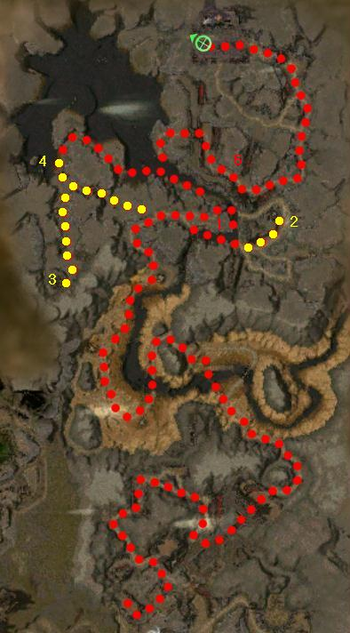

Elite: None / not listed
M3
Ruins of Surmia
◉ Mission Map

Click to enlarge · Local cache · Wiki
Summary (click to expand)
The Charr have retreated, but some members of the Ascalon Army have been taken prisoner! Rescue the survivors.
Region: Ascalon · Mission: 3 of 25 · Type: Cooperative
✓ Objectives
Rescue the soldiers taken prisoner by the Charr.
- Safeguard Prince Rurik's life.
- Free all the Ascalon captives.
- Get to the obelisks inside the ruined academy.
- ADDED: Cross the ravine and open the drawbridge for Rurik and Erol. (Only appears in the Mission Objectives after it is completed.)
- *BONUS* Follow the Flame Keepers [sic] at a distance to gain entrance to the Flame Temple. Extinguish the Flame Temple once inside.
→ Walkthrough
The goal of this mission is to rescue Ascalon captives while ensuring Rurik's survival (who only uses Defensive Stance). The Prince's scripted AI has two behaviors. He will run ahead to direct characters across the area. But also remain passive and follow the player once on course.
The mission has three stages: Before the drawbridge, opening it and the last stand with the obelisks:
The first part has many hidden devourers pop-ups. Take it slowly. Even if Prince Rurik rushes forwards, it is still possible to control the pace of the mission. Consider letting Rurik fight with little support when enemies are few and weak to give your party some time to regenerate health and energy (Rurik will continue ahead once the foes are defeated). Soon, you will rescue Erol (a cinematic will trigger) who joins your party and uses Flare. His survival is not required and is not involved in the bonus either.
During the second part, you are ordered to open the drawbridge while Rurik and Erol wait behind it. The lever for it is just on the opposite side of the tar river. To reach it, follow the tar river counter-clockwise, looping around beneath the drawbridge and north into an area crawling with Charr. Cross the wall as soon as possible and head south to the lever to allow Rurik and Erol to rejoin your party.
At the beginning of the third part, following Rurik north along the eastern edge will take your party to a Charr group with a boss. Be warned that Rurik will not take the straight path and will circle to the left and will likely aggro a group or two of Charr that you thought were safely away from the main path. Once Erol reaches the boss location a wave of four Charr will run at your group from the southwest. Defeating them will free three Mages. Once liberated, these NPCs will run toward the obelisks inside the ruined academy and attempt to fend off Charr parties while Rurik attempts to open the gate (talking to the Mages will let you hold them closer to you instead). The prince will use a skill called Knock which will only complete when the waves of Charr are defeated. The final cinematic will trigger once Knock is activated.
An alternative - and safer - approach for players who find the last two stages challenging consists of clearing all the Charr before letting Rurik and Erol through the drawbridge. Approach the end counter-clockwise, enter the ending area, then go back east to free the mages from behind. You can also go to the end normally, then kill groups of Charr visible from the ruins. These changes drastically reduce the risk of Rurik's death as he may rush towards the ruins full of Charr in the middle and commit suicide with over-aggro.
★ Bonus
The bonus can be started by talking to Breena Stavinson (point 2 on the wiki map) who is captive and guarded by a Charr boss. She will inform you about the Flame Keeper Charrs's ritual which consist of transferring their Sacred Flame towards a Flame Temple nearby. The objective is to gain entrance past a locked gate (point 4) by following the Charr (without attacking them) and waiting for them to open it. Once the gate is open you can kill the Ember Bearers. Go extinguish the Flame Temple by killing the four Flame Keepers guarding the Cauldron of Cataclysm to complete the bonus (point 3). It is a lot faster to exit the back gate clockwise to meet up with the main path than it is to go all the way back and follow the non-bonus path counter-clockwise, past where Breena was.
◆ Hard Mode
- Be careful when facing Charr Elementalists, as their multiple Meteor Showers can easily cause a wipe.
- Beware the Charr Mesmers who use Power Block which can shutdown your party's casters.
- Be especially careful before letting Rurik into the ruins of Surmia after the drawbridge. Clearing out all Charr is highly advisable.
☠ Bosses & Elites
Elite: None / not listed
Elite: None / not listed
Elite: None / not listed
Elite: None / not listed
Elite: None / not listed
Elite: None / not listed
Elite: None / not listed
Elite: None / not listed
✦ Tips & Notes
Skill recommendations
- Bond skills (if possible on other than the healer) to ensure Prince Rurik's survival, especially when he rushes ahead of the party and aggros several foes.
- Minions and/or binding rituals as meat shields to prevent Rurik taking all of the damage.
Notes
- The quest Cities of Ascalon requires playing through about two-thirds of this mission to reach the Historical Monument of Surmia.
- Complete exploration of this mission contributes approximately 1.1% to the Tyrian Cartographer title. There are some hard to get areas in the northern tar pit that most players usually miss. They can be reached by following the bonus route and exploring after the Ember Bearers open the gate barring the way to the Flame Temple. Finally, explore the northwest part of the map from the outside of the fortress before opening the drawbridge.
- After completing this mission, your party will appear in Nolani Academy.
- It's possible that if you do not keep the Ember Bearers in sight on your compass, they will leave the Flame Brazier behind, causing it to get stuck, and the gate to not open. The only options here if you want the bonus is to glitch through the gate or restart.
- If using a skill such as Cyclone Axe while fighting the ember bearers, you will probably notice an additional packet of 0 damage. This shows that the Flame is actually an untargetable invulnerable NPC.
- If using Heroes, make sure you wait for any spirits summoned in the path of the Flame Bearers to expire before talking to Breena. If your spirits aggro the Flame Bearers, they will follow up to you.
- Completion of this mission in Hard Mode will fill in page #4 of the Young Heroes of Tyria storybook.